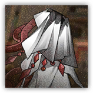

恐卡兹 Dreadkaz
近战 物理；普通 萨卡兹
|
 |
熔炉之中的妄念。一种不会自然出现的非人之物。它并非来自萨卡兹的灵或血，却能夺走它们。它是似是而非者，是尚未知的瘟疫，尚未来的诅咒。万不可放它出去。 |
恐卡兹丨Dreadkaz
中型异怪（萨卡兹），无阵营
| AC 15 | 先攻 +2（12） |
| HP 102（12d8+48） | |
| 速度 30 尺 | |
| 调整 | 豁免 | 调整 | 豁免 | 调整 | 豁免 | |||||||||
|---|---|---|---|---|---|---|---|---|---|---|---|---|---|---|
| 力量 | 16 | +3 | +3 | 敏捷 | 15 | +2 | +2 | 体质 | 18 | +4 | +4 | |||
| 智力 | 9 | -1 | -1 | 感知 | 12 | +1 | +1 | 魅力 | 18 | +4 | +4 |
| 抗性 黯蚀 |
| 感官 盲视60尺，被动察觉11 |
| 语言 无 |
| CR 5（XP 1,800；PB +3） |
特质 Traits
魔法抗性 Magic Resistence。恐卡兹为抵抗法术和其它魔法效应而作的豁免检定具有优势。
年代印痕 Mark of Epoch（1/日）。恐卡兹进行先攻检定或出现时，立即创造出汲取生命力的冲击波。魅力豁免检定：DC15，每个源自恐卡兹25尺立方区域内的敌人。失败：28（8d6）黯蚀伤害，并且失去1点技力。
动作 Actions
多重攻击 Multiattack。恐卡兹发动两次汲取猛击。
汲取猛击 Drain Slam。近战攻击检定：+7（若目标为萨卡兹则具有优势），触及5尺。命中：17（4d6+3）黯蚀伤害。